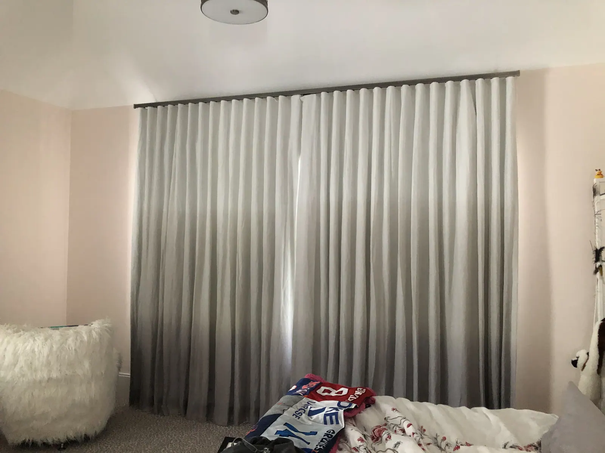

FAQ
Frequently asked questions
Straight answers about consultations, measuring, products and how we work.
Consultations & pricing
Do you offer free in-home consultations?
Yes. One of us comes to your home with samples, walks every room with you, and gives you a clear written quote after measuring every window.
Can you help me choose the right window treatment?
Yes. Whether you are shopping for a single window treatment, redecorating your entire house or solving a complex design challenge, we visit your home, look at every window with you and recommend options that fit how you use each room.
Do you offer financing?
Yes. Special financing is available with the Wells Fargo credit card, issued with approved credit by Wells Fargo Bank, N.A. Equal Housing Lender.
Measuring & installation
Do you install what you sell?
Yes. Our own installers measure, fit, adjust and clean up, and show you how everything works before they leave.
Do you measure and install shutters?
Yes. We take care of measuring and installation. Our experienced installers are fully trained and will ensure a perfect fit for your new shutters, and they show you how everything works before they leave.
Can I see shade and drapery samples in my home?
Yes. What you see online is just a sampling. Book a consultation and we bring the full range of colors and fabrics to your home, so you can choose in your own light.
Products
Which brands do you carry?
We are an authorized dealer for Hunter Douglas, Alta Window Fashions and Horizons, and we make custom drapery, bedding and upholstery.
Can you fit shutters to arched, bay and odd-shaped windows?
Yes. We fit shutters to arched tops, bay windows, French doors and the out-of-square openings that older Connecticut homes are full of.
Can I control motorized shades with Alexa, Siri or Google?
Yes. You can voice activate PowerView shades with Amazon Alexa, Siri on your Apple devices, or the Google Assistant.
Our company
What areas do you serve?
We are based at 100 Beard Sawmill Rd, Suite 225 in Shelton, CT, and have served Fairfield County, the New Haven County shoreline, the New York metro area and beyond for over 25 years.
What are your hours?
Monday to Friday by appointment only. We are closed Saturday and Sunday.
Do you do upholstery and bedding too?
Yes. Our upholstery department re-crafts furniture with new padding, springs, webbing, and fabric or leather covers, and we create custom bedding and linens.

Let’s look at your windows together.
A free visit, real samples, and an honest recommendation. No pressure to buy on the spot.